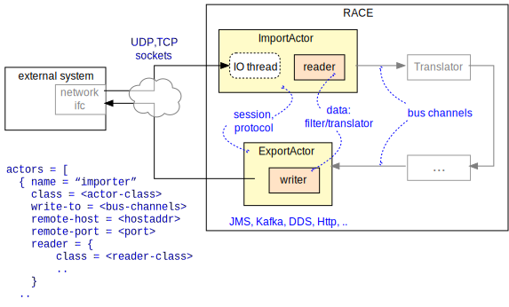
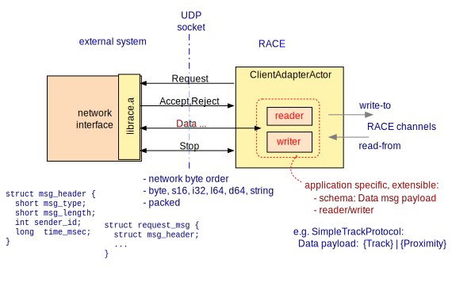

Connecting External Systems
Most RACE applications depend on external input from systems such as FAA's SWIM servers, and/or produce data to be used in external systems such as flight simulators.
Since virtually everything in RACE is done by means of actors it comes at no surprise that such communication takes place from dedicated Import/ExportActors, which constitute the outside interface of RACE.

RACE employs a two layer approach for such interfacing. In most cases the import/export actors only handle the underlying high level communication mechanism (e.g. messaging systems such as JMS or Kafka), and leave payload data processing such as filtering or translation to embedded reader and writer objects that can be configured within the respective import/export actor.
Import and export actors are conceptually very close to Archive/ReplayActors (see Archive and Replay). In fact, they should be exchangeable so that the only difference between live and archive/replay processing is the specification of respective actors.
Import/Export Actors
The main concern of the actors is to establish a connection or session with the external system, and to exchange data with it by means of a connection specific API (e.g. JMS) which typically does not care about the nature and format of the exchanged (payload) data. Consequently, the essential configuration of import/export actors is a specification of the external application to communicate with, which might involve hostname/ip-address, port, topics and user credentials (see Using Encrypted Configurations if this is sensitive data):
actors = [ ...
{ name = "ZZimporter"
class = "x.y.ZZImportActor"
write-to = "/zz/in"
remote-host = ...
remote-user = "??ZZuser"
reader = { ... }
}
...Receiving data from the external system normally involves blocking IO and is therefore done by a
dedicated data acquisition thread that is spawned by the actor upon initialization or start. This
thread is only visible to the actor instance, but care has to be taken to avoid data races between
the data acquisition thread and the rest of the actor code, which is executed within a Akka thread
(the handleMessage() method being its main entry). Publishing received data to RACE channels can
be done directly from the input acquisition thread since Akka's messaging API is thread safe.
Import actors typically mix in gov.nasa.race.core.PublishingRaceActor. Received data is
filtered/translated by the configured reader object and then published to the respective
write-to RACE channels. Since some external systems provide high volume data streams which might
imply high runtime costs within RACE (e.g. for translation), some import actors use the RACE
ChannelTopics mechanism to make sure received data is only published on RACE channels if there is a
client requesting it. This can also make use of the gov.nasa.race.actor.FilteringPublisher
trait.
Export actors mix in gov.nasa.race.core.SubscribingRaceActor, pass received RACE messages
through their writer* objects and then use the connection API to send the data, which is normally
non-blocking and therefore can happen from a Akka thread.
Import and export are roles which can be fulfilled by the same actor instance. This is particularly the case for actors that interface to external simulators, which usually involves bi-directional data exchange that needs to be synchronized.
Most import/export actor (basic) types can be found in the race-net-* modules (jms, kafka,
http, dds at this point). Most of the concrete import and export actors reside in the
gov.nasa.race.air.actor package.
Readers / Writers
Those are the objects that understand both RACE objects (such as gov.nasa.race.track.TrackedObject)
and external system data formats (protocol specific records and serialization formats).
Readers/Writers do not need to know about networking or other IPC mechanisms used to transmit
the data they process, nor should they (normally) know about the actor that creates/uses them.
Not all import/export actors need translation of payload data - some of the mechanism specific APIs (e.g. JMS and Kafka) do the wire format translation for us, and the incoming data might be just structured text such as XML messages. For this reason there is no uniform interface or type for readers and writers, just a number of very generic functional interfaces such as
gov.nasa.race.DataStreamReaderandDataStreamWritergov.nasa.race.Filtergov.nasa.race.Translator
Readers and writers are nested objects. If the respective import/export actor is not single-purpose (such as connecting to one specific simulator), they are specified within the actor configuration:
actors = [ ...
{ name = "SomeImportActor"
...
reader = {
class = "x.y.MyReader"
...
}Normally readers and writers do not need to be named and the only mandatory configuration is their
respective class. However, they can be fully parameterized as the actor passes the whole
sub-configuration object down into the reader/writer constructor, i.e. the reader/writer class is
the only type that has to know about such parameters.
AdapterActor and the race-adapter module
Most external systems that are used with RACE provide a networking interface, and make use of common APIs such as JMS to establish sessions and exchange data. In this case, all that is needed to connect RACE is a suitable set of import/export actors for the respective API (such as JMS, Kafka, DDS and Http).
For cases in which there is no external network interface RACE provides the generic AdapterActor,
together with corresponding native libraries that can be used to implement a network interface
within the external system. The C based incarnation of this library is librace.a.

AdapterActor uses UDP sockets to communicate with the external system.
The underlying wire format is compaatible with java.io.DataInput/OutputStream, i.e. does not
require any translation on the JVM side, but only supports basic Java types (boolean, short,
int, long, float, double and String - no references).
The protocol distinguishes between a server (which has to be started first) and a client (which requests a connection), but supports bi-directional data transfer.
The client initiates the session by sending a Request message, together with parameters such as
the requested schema name and update interval.
If the server can send/receive the requested data at the requested rate it send back a Accept
message with a client id, which the client henceforth uses to identify itself. Otherwise, a
Reject with a explaining error code is sent.
The server now enters a loop in which it periodically send Data messages at the requested rate,
and either synchronously or asynchronously reads (optional) Data messages from the client.
Data messages have a generic payload - neither AdapterActor nor librace care about what data
is sent, except of that both client and server have to agree on the schema (name) that defines the
exchanged payload data. RACE comes with a gov.nasa.race.air.SimpleTrackProtocol that implements
Track and Proximity data messages.
A session can be terminated at any time by sending a Stop message from either client or server.
On the RACE side the application specific payload data is handled by configured reader and writer
objects of the AdapterActor.
On the external side, librace requires the user to specify respective callback functions (such
as check_request() or write_data()) within a local_context_t structure, and then call
one of the toplevel functions such as race_interval_threaded(local_context_t* context).
librace also provides a number of convenience functions (e.g. to read/write data in DataOutputStream
format) that can be used to implement the required callbacks. Please refer to race.h for details,
which is the only required header.